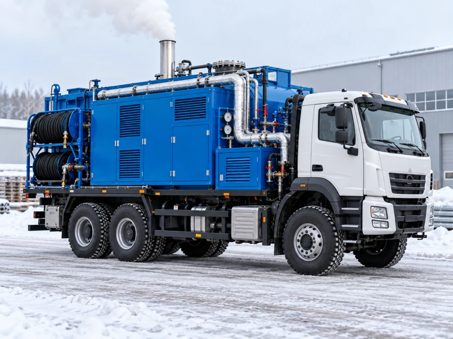

Аренда туалетных кабин
Чистые и комфортные кабины для любых мероприятий и строительных объектов
ПодробнееПредоставляем в аренду и обслуживаем санитарное оборудование, выполняем откачку и чистку канализационных систем. Работаем быстро, чисто и надежно.
Чистые и комфортные кабины для любых мероприятий и строительных объектов
Подробнее
Регулярное обслуживание, чистка и дезинфекция на постоянной основе
Подробнее
Аренда парогенераторов для разморозки бетона, арматуры, коммуникаций. Временная замена котельных.
Подробнее


Компания «Чистый город» оказывает комплексные услуги по предоставлению и обслуживанию санитарных систем:
Подберем оптимальный тип МТК и другого сантехнического оборудования, составим индивидуальный график обслуживания. Гарантируем удобство проведения крупных массовых мероприятий любого уровня, организацию достойных бытовых условий на строительных площадках, базах отдыха и в детских лагерях при отсутствии централизованной канализации и водоснабжения.
Опыт и надежность
Более 20 лет в сфере санитарных услуг. Работаем с объектами любой сложности. Индивидуальный подход к каждому клиенту.
Современная техника
Собственный парк оборудования для выполнения задач быстро и качественно.
Оперативность
Выезд специалистов в день обращения. Работаем без выходных. Круглосуточная служба сервиса.
Честные цены
Прозрачное ценообразование, без скрытых платежей и переплат. Скидки крупным и постоянным клиентам.


Юридические лица
Работаем со строительными компаниями, промышленными предприятиями, управляющими компаниями и ЖКХ. Гарантируем качество и соблюдение сроков.
Частные лица
Обслуживаем владельцев дач, загородных домов, фермерских хозяйств и частных участков. Предлагаем индивидуальные решения и обеспечиваем чистоту и комфорт.
Принимаем заявку
Звоните или оставляйте заявку на сайте. Уточняем адрес, тип объекта, характер проблемы и удобное время приезда.
Согласовываем детали
Специалист связывается с вами для уточнения всех нюансов и расчета стоимости работ.
Выезжаем на объект
Приезжаем с необходимым оборудованием в согласованное время и проводим диагностику.
Выполняем работы
Профессионально решаем вашу задачу с использованием специализированной техники и сертифицированных средств.
Контролируем качество
Проверяем результат работы и даем рекомендации по дальнейшей эксплуатации системы.
Оставьте заявку, и мы свяжемся с вами в ближайшее время